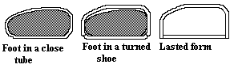
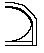
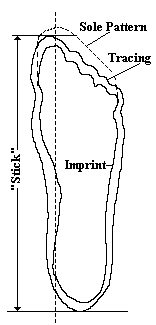
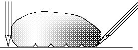
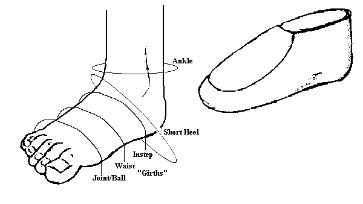
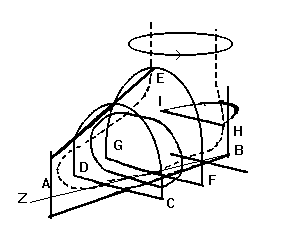
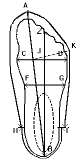
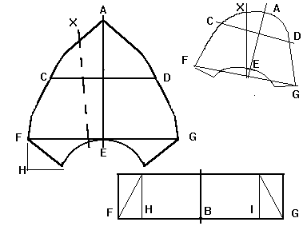

General Instructions
Creating the Pattern and Fitting the Foot.
This particular activity is the hardest portion of shoemaking to describe, at least for
me. It also is the part most clearly described by "a few minutes to learn and a
lifetime to master." Don't be too distressed if you never become an expert at
it. There is a delicate balancing point between making a simple container for the
foot to rest in (a "static fit") and making a shoe that pinches and squeezes.
The easiest way to deal with this, of course, is to make shoes in a a variety of
different sizes and just let the person who will be wearing the shoe take the
responsibility of getting something that's "close". That is, after all,
how most modern (and many medieval) shoes appear to be made. This is also where the
major chance of injuring someone with poor fitting footwear lies. However, I suspect
that most re-enactors would prefer that, as long as they are going to go to the effort of
making (or buying) hand made shoes, would rather have shoes, instead of something
ill-fitting but is in one of the three most common Medieval sizes.
The following instructions are applicable for making most, if not all, the designs in
this work. Special instructions will be given for each pattern, when appropriate. To make
a pattern, you will at least, need a pencil or pen, a large piece of paper (newspaper or
an unfolded paper sack is a good idea), tape measure (or other flexible measure), knife,
scissors, scrap cloth or felt, needle and thread. More items may be needed, so read
through the proceedures in front of you and plan ahead.
This is not guaranteed to make you shoes that WILL fit perfectly, but rather with some
care on your part, you can create shoes that will fit you and not hurt you.
First things first:
First, you will need to see what pieces you will need a "pattern" for.
For example, rands and top bands really don't need to be cut from a pattern,
as they tend to be simply strips of leather. Counters, or "heel
stiffeners" are more like triangles or semi-circles and, unless something specific is
called for, really up to the person making the shoe.
Secondly, decide if you are going to make these shoes on a last.
With a Last
You will need to have a last. Preferably these will be made for the person who will
be wearing the shoes. To find out why, go to Making
Lasts.
Once you have an appropriate last, trace the sole of the last onto a piece of paper.
Then with bits of scrap cloth or felt, build what the shoe is supposed to look like
ON the last. When you are finished, carefully dissasemble it along the seams shown
in the diagram. Some of these pieces may be a little off-shape, since you are making
something that is round and stretched, look flat. In those cases, you may have to
fiddle with it a little (scrap leather works best for this since it stretches the same way
the leather I will be making the shoe will -- I tend to use a chrome tanned suede I was
given for this).
Flattened out, this fabric and tape mock up forms the basic pattern. Transfer it
to paper. Remember that you will want to add a little to the pattern when you are
using a thicker leather.
This doesn't seam very hard because all the really tricky stuff has been done in the
last-making process.
Without a Last
I will cover several methods for doing this.
Making a pattern for a shoe can be broken down into three basic steps. The first
is measuring the foot, the second is transforming those measurements into an accurate
representation of the foot, and the third is extending those measurements into an idea of
what the SHOE should look like, not the foot. I'll explain that last bit more in a
moment. All the methods I know of for making a pattern can be broken down into these
stages.
- The first method, and not only easiest to do, but also the easiest to screw up, is
exactly the method I described above under "With a Last", only
wrapping the fabric around the foot, and not a block that's shaped like a foot. Why
do I say it's easy to screw up here, but didn't mention it above? Simply because
above we were making a pattern based on a Last, while here we are using a foot.
Contrary to popular belief, a last is not a the form of a foot. It's the form of the
inside of a shoe. If you make a shoe exactly the size and shape
of your foot, at the very least, when you turn it inside out and put it on, it will be
extremely tight, hard to move in, and eventually cause you problems. Look at the
shoes you wear every day. They have extra room in them, but not all over.

So, can you take a pattern like this and work with it? Certainly. Instead of
shaping around the whole foot, take a tracing of the foot along the outside edge.
When you make the fabric and tape pattern, extend the material along the sides of the foot
all the way to the ground.

This is
NOT a perfect solution, but it does generally work.
- The second method involves just measuring the foot, and building the pattern from those
measurements.

First, trace the foot, either with
the pencil perpendicular to the paper you are drawing on, or, if you are feeling
adventurous, running along the imprint line of the foot. You could also use a
pedograph print to do this, or even get a footprint of ink or paint.

- The areas to be measured are traditionally referred to as Girths, and there is some
dispute among the professionals as to what exactly the measurements are are
"supposed" to be. Really, as long as you are consistantly measuring the
foot and transferring those measurements to your patterns, it's not terribly relevant if
you don't use exactly the same system as someone else, or don't call things by exactly the
same names. Therefore, the girths most often taken are at the Joint or Ball of the
foot (i.e., the widest part), the Waist (which is about an inch behind the Joint), which
is sometimes referred to as the Low Instep (although some people place the Low Instep an
inch behind the Waist), the Instep or High Instep is the highest point of the instep,
where the bump of the middle cuneiform protrudes. There is also a girth measurement
called a Hass, which is behind the High Instep, and is the highest point of the foot,
where it merges with the shin, but this is not universally used (and isn't important for
measuring for below the ankle shoes). These may be measured around the foot, or from
the "ground" where you drew your tracing (i.e., straight down the side, or
reaching under to the imprint line). Finally, measure around the ankle, and take the
short heel measurements.

These measurements should not be taken while the weight is on the foot.



There are several other measurements you can take at this point such as taking the Stick
(or length) of the footprint. Measure the length of the vamp (or top of the foot from the
toe to the top of the ankle), marked AE. The outer circumference of the fore foot imprint
from the ankle-point to ankle point, Marked HI, being certain to note the location and
distances HB and IB. as well as the outer circumference of the foot print from the
ankle-point to ankle point, Marked FG, being certain to note the location and distances FB
and GB. At this point, you will want to mark the "point" of the toe, (marked A
on the figure) and the true centerline of the foot (Marked ZB on figure).
- Turn to the shoe design to be copied, and look for any special instructions, or look for
special problems that might arise. Carefully lay out the pattern on paper and
recheck your measurements. Now draw out the pattern, based on those measurements. If
you want to enlarge the archaeological designs to give you a rough idea of what the
pattern might look like, go ahead, but for goodness sake do not just use those for your
pattern. In fact, let me stress this again, CAUTION! Do Not
just enlarge the designs to use for a pattern. The designs in this work and such as those
found in archaeologial sites are not patterns, but rather guides to help
you make the patterns. The leather may have stretched and twisted in ways you aren't
expecting, and I may have fiddled with the picture in order to make the design easier to
understand. If you use them as direct patterns and cripple yourself, I won't have
any sympathy for you.
- As you are drafting out the design, you are going to need to add in some extra room in
the toes and the heel. I can't really give you a definate amount, since I've heard
anything from 1/2" in the front to 2/3" (round toed shoes)-1 1/3" (the last
is for narrow toed boots); and 1/4"-3/4" in the heel. I'd start with the
2/3" in the front and 1/4" in the back, and work from that. Note that this
in front of ALL the toes, and any extra for poulaines will extend beyond that.
- If you are using heavy leather, add 1/8"-1/4" to ALL dimensions, to give a
little more flex room.
- Sizes increase by the half inch (I don't know why since in lengths are measured in
thirds of an inch). This means that a pattern for a size eight shoe will be about a half
inch bigger all around than that of a size seven. Note that this rule of thumb is
unreliable beyond two or three sizes.
- Cut out the pattern. At this point, it would be a Good Idea to cut out a fitter's
model of cheap leather (or non-stretching fabric, or even muslin and duct tape), a
prototype or mockup, based on your pattern. This will give you the opportunity to adjust
your pattern without needlessly ruining leather. [I've screwed this part up myself]
Now, having just gone through all of that, there are several short
cuts available, most of which are discussed in "Easy Ways
Out".
Return to Contents or [Next]
Footwear of the Middle Ages - The Pattern, by I. Marc Carlson. Copyright 1996,
1999
This page is given for the free exchange of information, provided the author's name is
included in all future revisions, and no money change hands, other than as expressed in
the Copyright Page.